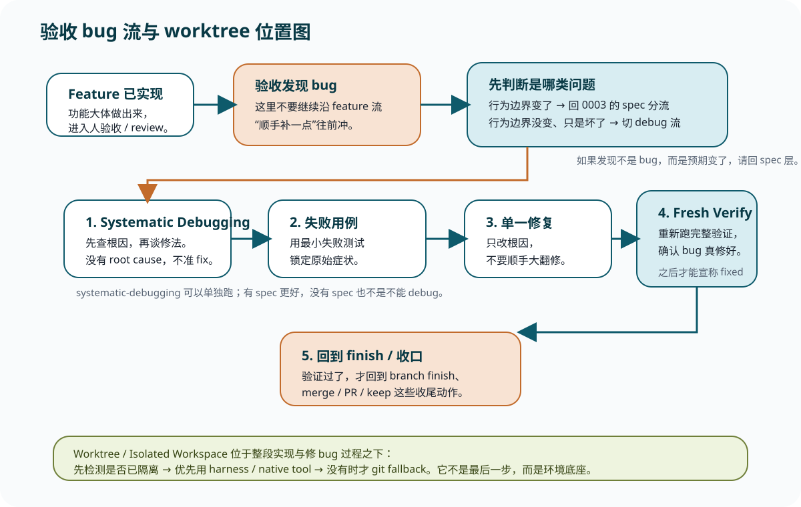

如果预期变了
这不是 bug 流，而是回到上一课的 spec 分流：先问 authority 还对不对，再决定修 spec、plan 还是实现。
Lesson 0004
这节课补最后一段现实流程。人验收时抓到 bug，你要切到 systematic-debugging -> verification-before-completion；using-git-worktrees 则一直待在实现和修 bug 的底座层。

“功能已经有了，只差修一个小 bug” 是最容易让流程失真的一句话。
因为这句话会让人误以为：既然 feature 大方向没问题，那就继续沿实现流往前补一点就好。但 Superpowers 把这件事拆得更细：如果行为边界没变，而只是表现坏了、测试挂了、实际行为和预期不一致，这已经不是“继续 feature 流”，而是一个调试问题。
这不是 bug 流，而是回到上一课的 spec 分流：先问 authority 还对不对，再决定修 spec、plan 还是实现。
这才是 systematic-debugging 的地盘。关键动作不是“快修”，而是先找 root cause。
所以这节课和 0003 的三种分流 不是冲突关系，而是前后衔接：先用 0003 判断是不是 spec / plan / implementation 的边界问题；确认边界没变后，再进入这节课的 debug 流。
systematic-debugging 可以单独执行，不要求先有 spec这个 skill 的触发条件不是“手上有没有 spec”，而是“你是不是遇到了 bug、失败测试、异常行为、性能问题、构建失败”。
也就是说，systematic-debugging 完全可以单独跑。有 spec 时，spec 帮你定义 expected behavior；没有 spec 时，也仍然可以围绕错误信息、复现步骤、数据流和 working example 去做 root cause 调查。
原文：skills/systematic-debugging/SKILL.md · 本课为什么必须先读：它直接规定了“只要是 bug / 失败 / 异常行为，就先查根因，不准猜修法”。
【核心原则】 永远先找到 root cause，再尝试 fix。 修症状，不修根因，等于失败。 【铁律】 NO FIXES WITHOUT ROOT CAUSE INVESTIGATION FIRST 如果还没完成 Phase 1，就不能提 fix。 【什么时候用】 任何技术问题都用： - test failure - production bug - unexpected behavior - performance problem - build failure - integration issue 尤其是在这些时刻更不能跳： - 时间压力很大 - “这个一眼就能 quick fix” - 你已经试过几次 fix - 上一个 fix 没生效 - 你其实还没完全理解问题 【四个阶段】 Phase 1：Root Cause Investigation - 仔细读 error message 和 stack trace - 稳定复现 - 看最近改动 - 多组件系统要先补 evidence gathering - trace data flow，向上追坏值来源 Phase 2：Pattern Analysis - 找同仓库里 working example - 完整读参考实现 - 列出 broken 和 working 的差异 Phase 3：Hypothesis and Testing - 一次只立一个假设 - 用最小改动测试它 - 不要多个 fix 一起上 Phase 4：Implementation - 先做最小失败用例 - 只做单一 fix - fix 后重新验证 - 如果 3 次以上 fix 都失败，要开始怀疑 architecture 【你在这一课该记住的点】 systematic-debugging 不是“修 bug 的语气词”， 而是一套禁止你靠猜乱修的控制流程。
spec 提供“什么叫对”的上位定义；debug skill 提供“怎么找到为什么错了”的方法。一个定义预期，一个定位根因。
仍然可以围绕报错、复现、working example、调用链和数据流去追问题。缺 spec 不等于可以跳过根因调查。
debug skill 解决的是“别乱修”；verification-before-completion 解决的是“别乱宣布修好了”。
所以这两张卡天然成对：前者管 root cause，后者管 evidence。真正把 bug 流走圆的，不是把代码改掉，而是用最新验证证据证明原始症状已经消失，而且相关检查确实通过。
原文：skills/verification-before-completion/SKILL.md · 本课为什么要嵌：它明确规定“fixed / passing / done” 这种话必须建立在 fresh verification evidence 上。
【核心原则】 Evidence before claims, always. 【铁律】 NO COMPLETION CLAIMS WITHOUT FRESH VERIFICATION EVIDENCE 如果你没有在这一条消息里运行验证命令， 就不能声称它 pass 了。 【Gate Function】 在任何 completion / fixed / passing 之类的表达之前： 1. IDENTIFY：什么命令能证明这个 claim 2. RUN：跑完整命令 3. READ：读完整输出、exit code、失败数 4. VERIFY：输出到底有没有证明这个 claim 5. ONLY THEN：才允许说“修好了 / 通过了” 【常见失败】 Agent said success ≠ bug fixed Code changed ≠ issue resolved Partial verification ≠ enough evidence 【对 bug flow 最重要的一句】 真正的“bug fixed”不是改完代码， 而是原始症状验证通过，加上相关检查也有新鲜证据。
找到 root cause -> 做最小失败用例 -> 单一 fix -> fresh verification。少哪一环，都会让“修好了”变成错觉。
这里不是回头再补一轮抽象测试，而是把“原始症状”锁进最小失败用例，再用验证门证明它真的绿了。
using-git-worktrees 不是最后一步，而是整段工作的环境层你之前“从来没用过 worktree 这个 skill 也能正常走完流程”，这件事本身并不奇怪。
因为这张卡的重点不是“强迫你显式敲一次 git 命令”，而是：在开始实现或修 bug 前，确保自己在隔离工作空间里；如果平台原生已经帮你隔离了，就别再手搓一个新的去跟 harness 打架。
原文：skills/using-git-worktrees/SKILL.md · 本课为什么现在才讲：它不是主流程后半程的“新步骤”，而是你前面所有实现 / 修 bug 活动所在的环境层。
【核心原则】 先检测现有隔离。 再用 native tool。 最后才 fallback 到 git。 Never fight the harness. 【Step 0：先检测是不是已经隔离】 如果已经在 linked worktree 里： - 不要再创建一个新的 worktree - 直接跳到项目 setup 如果不是隔离工作空间： - 如果用户还没表态，要先问 consent - 用户拒绝，也可以 in-place 工作 【Step 1a：优先 native worktree tools】 如果平台已经有 worktree / EnterWorktree / --worktree 之类的原生机制： - 用它 - 不要绕开它直接 git worktree add 【Step 1b：只有没有 native tool 时，才 git fallback】 手工 git worktree 是兜底，不是默认第一选择。 【Step 3：验证 clean baseline】 进入工作空间后要先做 setup，再跑 baseline tests。 如果 baseline 本来就不干净，后面每个失败都会变得含糊。 【你在这一课该记住的点】 worktree 不是某个 feature 做完后才补的动作， 而是实现与调试在什么空间里发生的问题。
这就是你“没显式用也像在用了”的常见来源。skill 要你做的是先检测并承认这件事，而不是重复创建。
这时 worktree 才最有价值：先隔离，再实现，再 debug，再收口，避免把主工作区搅脏。
这当然可以，但它在 skill 里是兜底位，不是默认位。默认顺序始终是：先看 harness，再看 git。
更贴近真实工作的完整后半程，不是“实现 -> 点一点 -> 完事”，而是：
在合适的隔离工作空间里实现 -> review / 验收 -> 发现 bug 时先判断是否 spec 变了 -> 没变就切 systematic-debugging -> 用最小失败用例锁定症状 -> 单一修复 -> verification-before-completion 给出 fresh evidence -> 再回 finish skill 正式收口。
让你知道“功能有了”不等于流程结束，后面还有 final review 和 finish。
让你知道跑偏时先分 spec / plan / implementation，不要在错误层级上用力。
让你知道验收 bug 时该切 debug 流，以及 worktree 其实一直在环境层，而不是课尾彩蛋。
这组题只检查一件事：你能不能把“发现 bug”“修好 bug”“在哪个工作空间里修”这三件事分开。
预期变了就回 spec 层；预期没变但东西坏了，就切 debug 流。
`systematic-debugging` 的核心不是“修”，而是先查 root cause。
`verification-before-completion` 要求 fresh evidence，不允许靠感觉宣布成功。
它决定实现和修 bug 在什么空间里发生；已经隔离好就承认它，没隔离再补它。
这一课最值得你亲自通读的主资料是 systematic-debugging/SKILL.md。因为它把最后一类最容易被人靠经验乱跳流程的场景，硬生生重新拉回了“先调查，再修复”的轨道上。